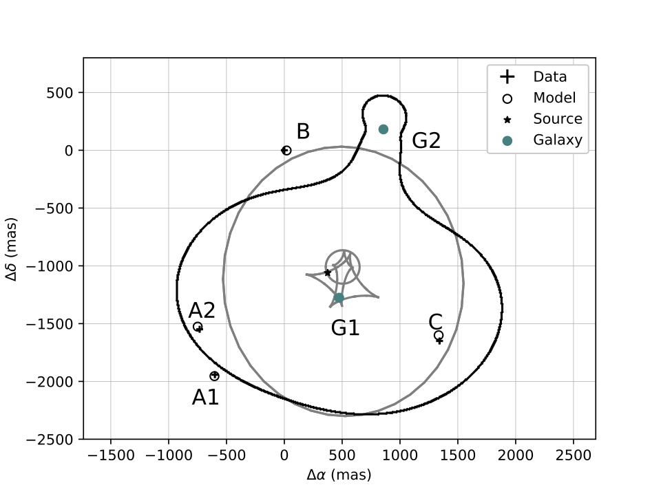
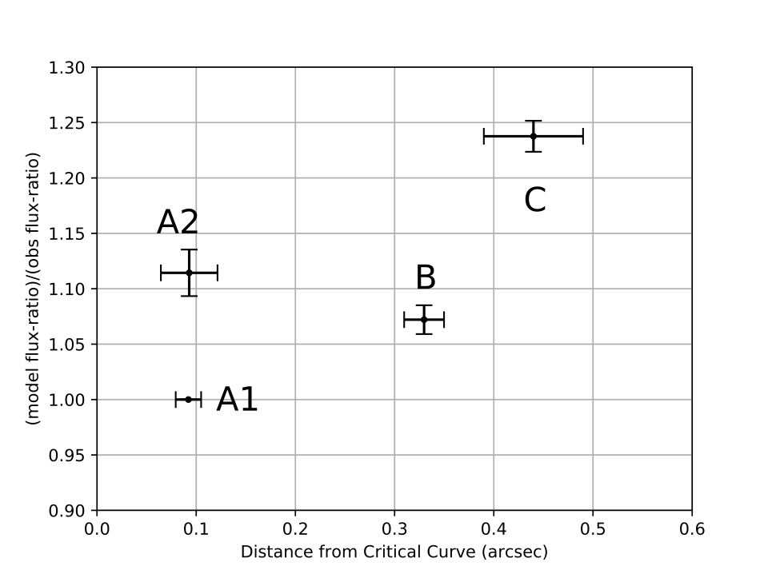
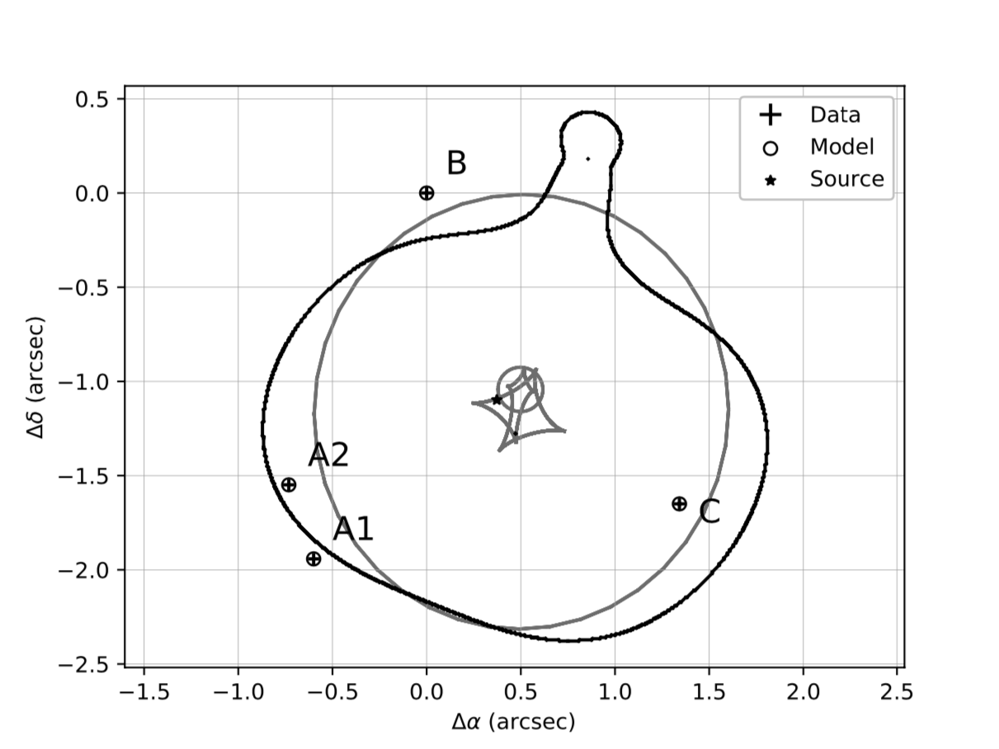
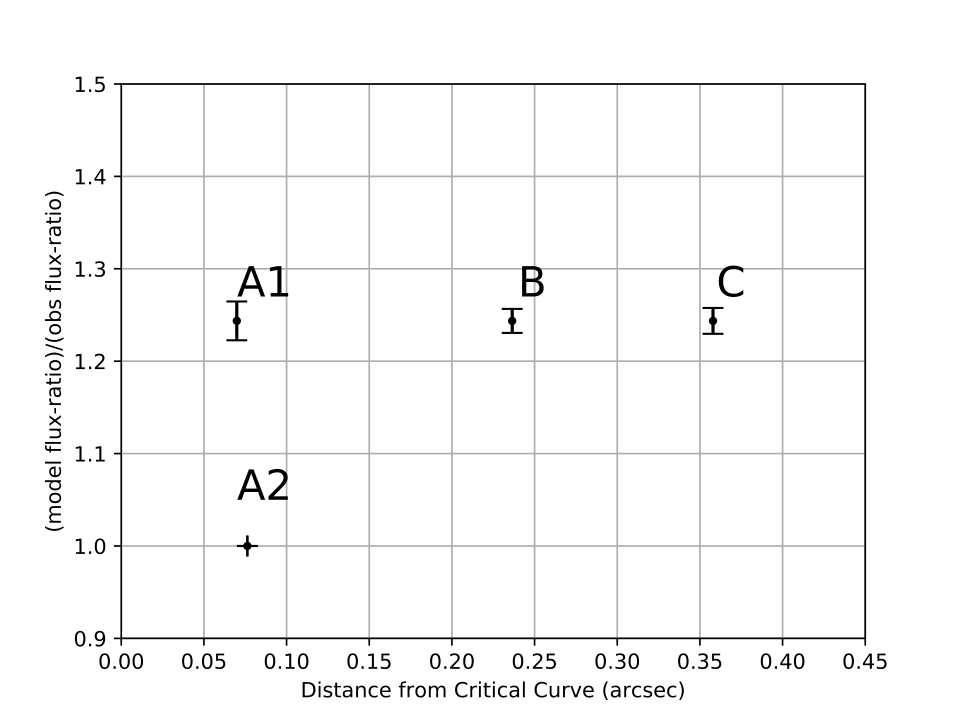
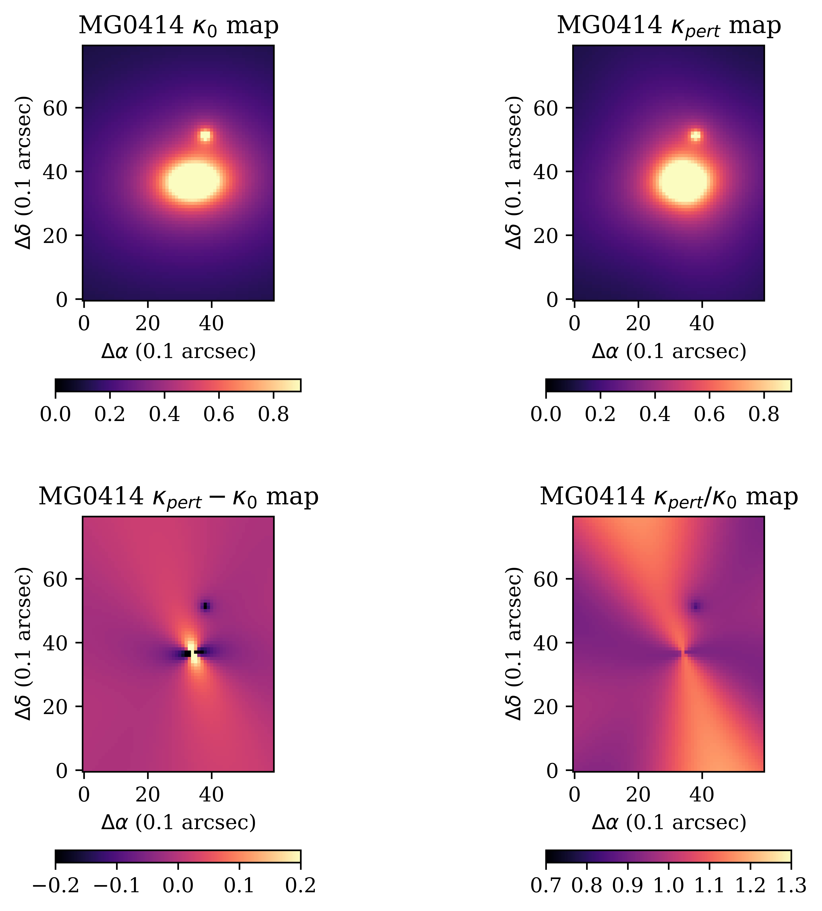

MG0414
MG0414 model
Updated on 18-6-2019

The best-fit model without 4th order perturbatiton. (11 constraints and 8 free parameters.

The model foes not reproduce the observed flux-ratios well. The relatively large positional errors are reflected in the x error bars.

This is a model with fourth-order external perturbation included, on top of two SIE models and an external shear. Position reproduction significantly improves. (11 constraints and 10 free parameters.)

The flux-ratios improved from the model without the perturbation as one can now observe images A1, B and C now occupy a constant level. However, the flux of A2 remains problematic.

A comparison between the convergence of the model without and with 4th-order perturbation. The right panel shows the ratio between the two.
Fitting of the light profile in HST I band image of the lensing galaxy (Falco 1997) reveals the PA of the light is 71±5 degrees while the ellipticity is 0.2±0.02. The mass profile of the main galaxy G1 has PA 84 degrees and ellipticity 0.14. Although these two are slightly different, the 4th order perturbation also contributes to the mass and alter the PA and ellipticity slightly. In fact, the mass follows the light rather closely.